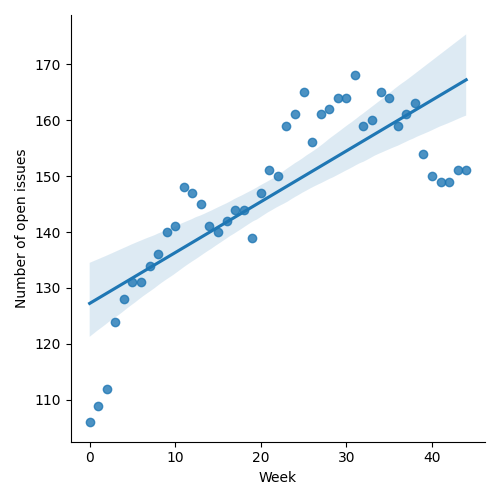
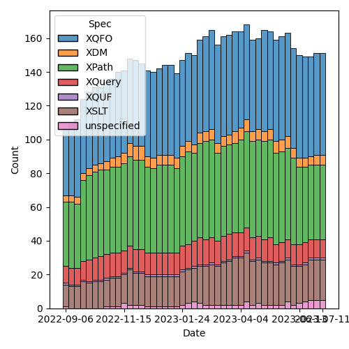
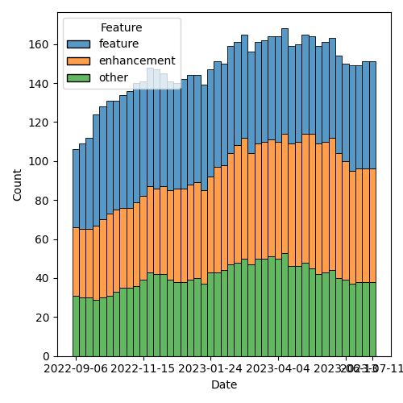

QT4 CG Meeting 041 Minutes 2023-07-11
Table of Contents
Agenda index / QT4CG.org / Dashboard / GH Issues / GH Pull Requests
Draft Minutes
Summary of new and continuing actions [0/5]
[ ]QT4CG-002-10: BTW to coordinate some ideas about improving diversity in the group[ ]QT4CG-016-08: RD to clarify how namespace comparisons are performed.[ ]QT4CG-026-01: MK to write a summary paper that outlines the decisions we need to make on “value sequences”- This is related to PR #368: Issue 129 - Context item generalized to context value and subsequent discussion.
[ ]QT4CG-029-07: NW to open the next discussion of #397 with a demo from DN See PR #449[ ]QT4CG-039-01: NW to schedule discussion of issue #52, Allow record(*) based RecordTests
1. Administrivia
1.1. Roll call [11/11]
[X]Reece Dunn (RD)[X]Sasha Firsov (SF)[X]Christian Grün (CG)[X]Joel Kalvesmaki (JK) [0:05-][X]Michael Kay (MK)[X]John Lumley (JL)[X]Dimitre Novatchev (DN)[X]Ed Porter (EP)[X]C. M. Sperberg-McQueen (MSM)[X]Norm Tovey-Walsh (NW). Scribe. Chair.[X]Matt Patterson (MP)
1.2. Accept the agenda
Proposal: Accept the agenda.
Accepted.
1.2.1. Status so far…

Figure 1: “Burn down” chart on open issues

Figure 2: Open issues by specification

Figure 3: Open issues by type
1.3. Approve minutes of the previous meeting
Proposal: Accept the minutes of the previous meeting.
Accepted.
1.4. Next meeting
The next meeting is scheduled for Tuesday, 18 July 2023.
No regrets heard.
Reminder: the CG will take a vacation for four weeks in August. We will not meet on 1, 8, 15, or 22 August.
1.5. Review of open action items [1/6]
[ ]QT4CG-002-10: BTW to coordinate some ideas about improving diversity in the group[ ]QT4CG-016-08: RD to clarify how namespace comparisons are performed.[ ]QT4CG-026-01: MK to write a summary paper that outlines the decisions we need to make on “value sequences”- This is related to PR #368: Issue 129 - Context item generalized to context value and subsequent discussion.
[X]QT4CG-029-01: RD+DN to draft spec prose for the “divide and conquer” approach outlined in issue #399- Overtaken by events.
[ ]QT4CG-029-07: NW to open the next discussion of #397 with a demo from DN See PR #449[ ]QT4CG-039-01: NW to schedule discussion of issue #52, Allow record(*) based RecordTests
1.6. Review of open pull requests and issues
The following editorial or otherwise minor PRs were open when this agenda was prepared. The chair proposes that these can be merged without discussion.
- PR #597 : Editorial fixes from #566 (fn:parse-uri)
- Check for technical comments from CG
- PR #595 : 588: (Editorial, XSLT) minor clarifications regarding xsl:sort
- PR #594 : 592: (XSLT, Editorial) Add missing description of exponent-separator
- PR #593 : 591: [XSLT, editorial] Add defaults to XSLT element syntax summaries
- PR #590 : 343: make $collation uniformly optional
- PR #587 : 365: Allow braces in switch and typeswitch expressions
- PR #586 : 585: [Editorial] Rearrange text (and grammar) for dynamic function calls
- PR #584 : Editorial: Correction to map:filter examples
- PR #578 : fn:format-integer: $lang → $language
- PR #577 : Editorial: improve generator for keyword tests
- PR #555 : 464: Revised narrative of normalization steps for serialization
- PR #547 : Action QT4CG-036-02: Further elaboration of the rules for function identity
After discussion, #598 removed.
Proposal: Accept these PRs.
Accepted.
It has been proposed that the following issues be closed without action.
- Issue #539 FLOWR where clause with a "do when false" option
Proposal: Close these issues.
Accepted.
2. Technical Agenda
2.1. PR #533: 413: Spec for CSV parsing with fn:parse-csv()
- See PR #533
- MP introduces the changes proposed with a slide deck
- … (Walks through slide deck)
- RD: Why is there only a record for the top level?
- MP: So it fits on a single slide; also I have questions about how to define nested records. Also, I have some questions about where record types are shared.
- MP continues…
- MSM: Trim trims only leading and trailing whitespace, I assume?
- MP: Yes.
- MP continues…
- … Extract column names from the first row: boolean or a map from integer to string to specify headers for the columns.
- … There’s an option to filter columns.
- … You can specify that the number of columns can be fixed. They’re padded or truncated.
- MSM: If I say nothing?
- MP: Then you get what you get?
- JL: Is there an argument for filter rows?
- MP: There isn’t, and I haven’t thought of a use for it beyond removing say the first “n” rows. You probably want to evaluate each row programmatically. Columns are relatively fixed, unlike rows.
- JL: I might just want to test on the first 25 or 40 rows. Some mechanism that allowed me to truncate parsing might be handy.
- MP: Yes, I think one of the reasons for using a sequence of rows is that it’s easier to generate lazily. And we have a large number of good tools for extracting “n” rows from a sequence.
- DN: Whenever I see arguments for options, my question is always, is this a mandatory argument? If it’s not, what are the defaults?
- MP: The default is to extract column names from the first row, to not filter columns, and not to restrict the number of columns.
- MSM: I’d like a way to specify the default behaviors explicitly.
- MP: I’m not sure I have the notation correct, but that’s what you’re supposed to be able to do here.
Some discussion of the possible details around specifying defaults, with enumerated values for example. Whether a keyword is necessary or if an empty sequence suffices is something of an open question.
- DN: I would like to see exactly these cases in examples in the spec.
- MP: Yes, exactly.
- MP continues…
- You can supply column names reliably even if the data doesn’t include them.
- JL: I think it’s important that if the boolean in
false, the first row becomes a header row. That needs to be explicit. - MP: Yes.
- MP continues…
filter-columnsandnumber-of-columns…- MP discusses the example on the slide titled “Using
csv-to-xdm()’sresponse”. - … I have questions about how best to deal with namespaces and cross references.
- JL: The rows are all siblings of each other, but their position isn’t the same as the row position. Having a rows wrapper would make it more straightforward.
- MP: That makes sense.
- EP: You can supply a boolean or a map. Can you override the headers? So you want to specify “true” but also specify your own set.
- MP: Yes. I’m not sure. I think there’s an argument that you can handle that the same way you’d handle the not uncommon case where there are several rows of header-like data. But maybe there needs to be another option…
- MSM: I like the idea of saying just apply tail to the sequence of rows in that case.
- EP: Yes, that would work. I was just pointing out that the way the option is specified, you can’t do both.
- MP continues with
csv-to-xml()- In a namespace?
- RD: I wonder if it should use the
fn:namespace to be similar to how analyze-string works.
Some discussion of how this compares to JSON. Consensus: there’s a clear precedent, use the `fn:` namespace.
- MP: The last question is about how to map between fields and column headers. Either you have id/ref pairs, or you can use the column.
- JK: Why can’t we just rely on position?
- MP: You could rely on positionality, but if you have a CSV with 50 or 60 columns and you want the ones with the “name” and the “amount” then names are better than “columns 2 and 35”.
- NW: My preference is the id/ref version.
- MSM: I don’t understand why. My gut reaction is “what I’m used to and what I’m happy with is to have the column names used as element names.” That makes processing the result feel a lot more convenient.
Some discussion of whether or not column names are likely to contain strings that don’t match cleanly to attribute or element names.
- MP: The other argument is that if you have large, long column names then you’re adding a lot more data into each row.
- MSM: I think relying on position would make sense if people are worried about data size. The added indirection of having to keep a table and have a lookup the name from the ID doesn’t appeal to me.
- MK: (in the chat window) I think the id/idref approach is an unnecessary extra level of indirection.
- MP: My goto would be to work with the XDM directly, so maybe my opinion isn’t as relevant.
- MK: I also think if you’re worried about space, the number of attributes is probably more significant than the length of them.
- MP continues with “~fn:parse-csv()~ output”
- It handles quoting and delimiters. You can build anything you want from that without having to reimplement the parsing constraints.
- JL: Isn’t there an argument that this one says gives you the header rows?
- MP: Yes.
- JL: Then the example could be clearer.
- MP: Yes.
- RD: Given that
fn:parse-csvis now simple, would it make sense to have the inverse, “serialize-csv”? - MP: Yes, I’m hoping to add that. My rough thinking is that you want
a function the generates the field values with quoting and the rows.
- … The record on the “Input options” slide is what you’d had to these functions.
- All the information you’d need to generate them is in there.
- MP continues with “
fn:parse-csvdata input”- The problem with
unparsed-text-linesis that it strips the line endings. We can’t be sure there’s a 1:1 correspondence between a row and a line in a file.
- The problem with
- CG: We have parse-json and json-doc, maybe it would be reasonable to have parse-csv and csv-doc for that purpose?
- MP: Yep.
- MK: (in the chat window) Can't we just let the optimizer cope with
streaming the combination of
unparsed-text() => parse-csv()? - MK: Maybe. I don’t know.
- MSM: I think I understand what MP is driving at, but I’m a little confused by some details.
- If I’m understanding correctly, in the simple case, the lines of the CSV file and the records in the records are 1:1, but that’s not always the case.
- MP: Yes.
- MSM: And the case in which that’s not true is the case where there may be multiple lines. It’s 1:n not m:1. Right?
- MP: Yes.
- MSM: So if we want
unparsed-text-lines()to be usable this way, we have to be able to specify that you can begin a multi-line quote in one string and finish it later.
Some discussion of the problems associated with multi-line fields. If
the line ending is stripped away by the uparsed-text-lines()
function, then you’ll loose information. It might be important that
the embedded line ending was CR/LF and not just LF.
- MSM: I’m willing to say that is a corner case that may arise and when it does, you’ll want to parse it yourself.
- MP: There’s a larger question of dealing with error handling.
- JL: We know that
parse-csv()is doing something internally that is likeunparsed-text-lines(). So you don’t gain anything by usingunparsed-text-lines(). - MSM: I’m guessing about what the JSON parsing functions do.
- RD: It would be useful to add these corner cases as tests in the test suite.
3. Any other business?
None heard.